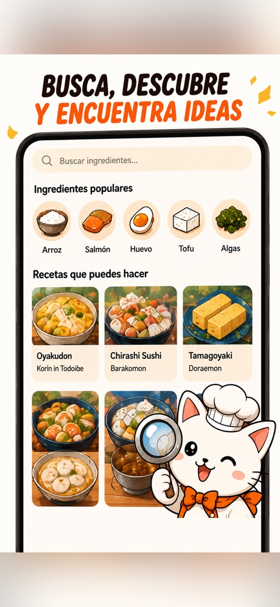
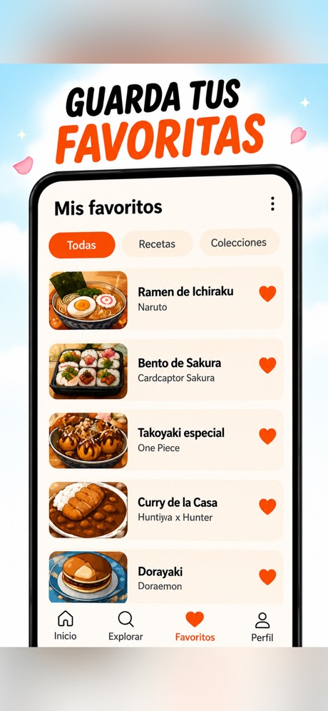
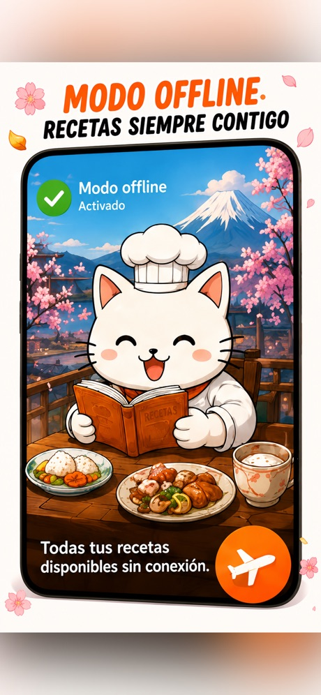
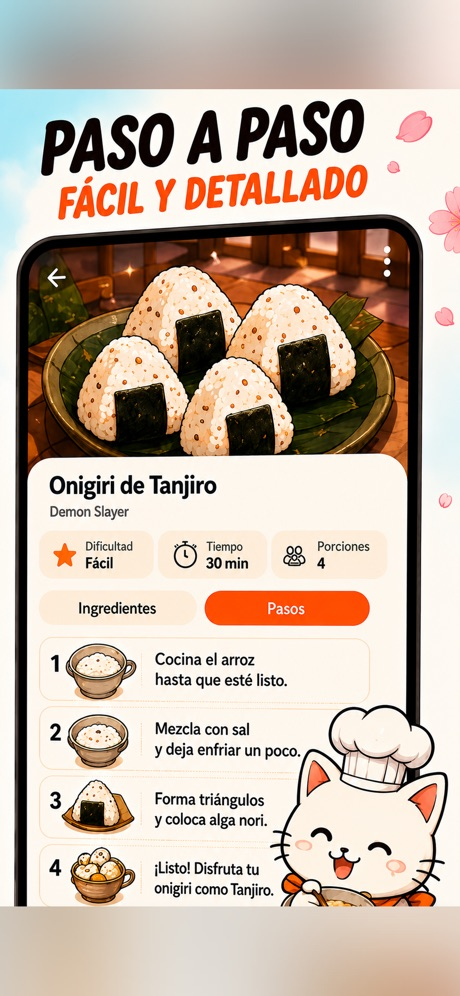

Recetas Anime: Mochi, Takoyaki
Takoyaki, mochi, onigiri, dango y recetas de arroz veganas, fáciles y offline
- Gratis
- Ramen
- Sushi
- Recetas de anime
Así es por dentro




¿Qué es Anime Food?
Anime Food es una app gratis de recetas japonesas para fans del anime y para quien cocina en casa: los platos que salen en el anime, explicados paso a paso para hacerlos de verdad.
Del ramen y el sushi a los bentos, la comida callejera japonesa y los postres kawaii, cada receta usa ingredientes sencillos y pasos claros, así que sirve aunque sea la primera vez que cocinas comida japonesa.
- Ramen y fideos japoneses: miso, tonkotsu, shoyu, udon, soba y yakisoba
- Sushi y platos de arroz: maki, onigiri, donburi, katsudon, oyakodon y curry japonés
- Bento y comida callejera: tamagoyaki, takoyaki, okonomiyaki, karaage, gyozas y tempura
- Postres y dulces: taiyaki, dango, mochi, dorayaki y matcha
- Modo cocina: los pasos a pantalla completa, un temporizador en los que lo necesitan y una pantalla que no se apaga
¿Anime Food es gratis?
Sí, se descarga y se cocina con ella gratis.
¿Hace falta saber cocinar?
No. Las recetas están pensadas para principiantes, con ingredientes sencillos e instrucciones paso a paso.
¿Son recetas de verdad o solo dibujos de anime?
Recetas de verdad: cocina casera japonesa auténtica que puedes hacer en tu cocina, inspirada en la comida que sale en el anime.
¿En qué móviles funciona?
iPhone (App Store) y Android (Google Play).
What is Anime Food?
Anime Food is a free Japanese recipe app for anime fans and home cooks: the dishes you see in anime, explained step by step so you can cook them for real at home.
From ramen and sushi to bento boxes, Japanese street food and kawaii desserts, every recipe uses simple ingredients and clear steps, so it works even if it is your first time cooking Japanese food.
- Ramen and Japanese noodles: miso, tonkotsu, shoyu, udon, soba and yakisoba
- Sushi and rice dishes: maki, onigiri, donburi, katsudon, oyakodon and Japanese curry
- Bento and street food: tamagoyaki, takoyaki, okonomiyaki, karaage, gyoza and tempura
- Desserts and sweets: taiyaki, dango, mochi, dorayaki and matcha
- Cooking mode: full-screen steps, a timer on the steps that need it and a screen that stays on
Is Anime Food free?
Yes, it is free to download and cook with.
Do I need to know how to cook?
No. The recipes are written for beginners, with simple ingredients and step-by-step instructions.
Are these real recipes or just anime pictures?
Real recipes: authentic Japanese home cooking that you can make in your own kitchen, inspired by the food that appears in anime.
Which devices does it work on?
iPhone (App Store) and Android (Google Play).
ما هو Anime Food؟
Anime Food تطبيق مجاني للوصفات اليابانية موجّه لمحبي الأنمي ولمن يطبخ في المنزل: الأطباق التي تراها في الأنمي مشروحة خطوة بخطوة لتحضّرها فعلاً في بيتك.
من الرامن والسوشي إلى علب البينتو والأكلات اليابانية الشعبية في الشوارع وحلويات الكاواي، تعتمد كل وصفة على مكونات بسيطة وخطوات واضحة، فتناسبك حتى لو كانت أول مرة تطبخ فيها طعامًا يابانيًا.
- الرامن والنودلز اليابانية: ميسو، تونكوتسو، شويو، أودون، سوبا وياكيسوبا
- السوشي وأطباق الأرز: ماكي، أونيغيري، دونبوري، كاتسودون، أوياكودون والكاري الياباني
- البينتو وأكلات الشوارع: تاماغوياكي، تاكوياكي، أوكونوميياكي، كاراآغي، غيوزا وتمبورا
- الحلويات: تايياكي، دانغو، موتشي، دوراياكي وماتشا
- وضع الطبخ: خطوات بملء الشاشة، ومؤقّت في الخطوات التي تحتاجه، وشاشة تبقى مضاءة
هل Anime Food مجاني؟
نعم، التحميل والطبخ به مجانيان.
هل أحتاج إلى معرفة الطبخ؟
لا. الوصفات مكتوبة للمبتدئين، بمكونات بسيطة وتعليمات خطوة بخطوة.
هل هذه وصفات حقيقية أم مجرد صور أنمي؟
وصفات حقيقية: طبخ منزلي ياباني أصيل يمكنك تحضيره في مطبخك، مستوحى من الطعام الذي يظهر في الأنمي.
على أي أجهزة يعمل؟
آيفون (App Store) وأندرويد (Google Play).
Was ist Anime Food?
Anime Food ist eine kostenlose App mit japanischen Rezepten für Anime-Fans und Hobbyköche: die Gerichte, die man in Anime sieht, Schritt für Schritt erklärt, damit du sie zu Hause wirklich nachkochen kannst.
Von Ramen und Sushi über Bento-Boxen und japanisches Streetfood bis zu Kawaii-Desserts: Jedes Rezept kommt mit einfachen Zutaten und klaren Schritten aus und eignet sich daher auch, wenn du zum ersten Mal japanisch kochst.
- Ramen und japanische Nudeln: Miso, Tonkotsu, Shoyu, Udon, Soba und Yakisoba
- Sushi und Reisgerichte: Maki, Onigiri, Donburi, Katsudon, Oyakodon und japanisches Curry
- Bento und Streetfood: Tamagoyaki, Takoyaki, Okonomiyaki, Karaage, Gyoza und Tempura
- Desserts und Süßes: Taiyaki, Dango, Mochi, Dorayaki und Matcha
- Kochmodus: Schritte im Vollbild, ein Timer bei den Schritten, die ihn brauchen, und ein Bildschirm, der anbleibt
Ist Anime Food kostenlos?
Ja, die App ist kostenlos herunterzuladen und zum Kochen zu nutzen.
Muss ich kochen können?
Nein. Die Rezepte sind für Anfänger geschrieben, mit einfachen Zutaten und Schritt-für-Schritt-Anleitungen.
Sind das echte Rezepte oder nur Anime-Bilder?
Echte Rezepte: authentische japanische Hausmannskost, die du in deiner eigenen Küche zubereiten kannst, inspiriert von dem Essen, das in Anime vorkommt.
Auf welchen Geräten funktioniert die App?
iPhone (App Store) und Android (Google Play).
Qu'est-ce qu'Anime Food ?
Anime Food est une appli gratuite de recettes japonaises pour les fans d'anime et les cuisiniers du quotidien : les plats que l'on voit dans les anime, expliqués pas à pas pour les cuisiner vraiment chez soi.
Des ramen et sushis aux bentos, à la street food japonaise et aux desserts kawaii, chaque recette utilise des ingrédients simples et des étapes claires, donc elle convient même si c'est la première fois que vous cuisinez japonais.
- Ramen et nouilles japonaises : miso, tonkotsu, shoyu, udon, soba et yakisoba
- Sushis et plats de riz : maki, onigiri, donburi, katsudon, oyakodon et curry japonais
- Bento et street food : tamagoyaki, takoyaki, okonomiyaki, karaage, gyoza et tempura
- Desserts et douceurs : taiyaki, dango, mochi, dorayaki et matcha
- Mode cuisine : étapes en plein écran, minuteur sur les étapes qui en ont besoin et écran qui reste allumé
Anime Food est-elle gratuite ?
Oui, elle se télécharge et s'utilise gratuitement pour cuisiner.
Faut-il savoir cuisiner ?
Non. Les recettes sont pensées pour les débutants, avec des ingrédients simples et des instructions pas à pas.
Ce sont de vraies recettes ou juste des images d'anime ?
De vraies recettes : une authentique cuisine japonaise familiale que vous pouvez réaliser dans votre cuisine, inspirée des plats qui apparaissent dans les anime.
Sur quels appareils ça fonctionne ?
iPhone (App Store) et Android (Google Play).
Anime Food क्या है?
Anime Food एनिमे के शौकीनों और घर पर खाना बनाने वालों के लिए जापानी रेसिपी का एक मुफ़्त ऐप है: एनिमे में दिखने वाले व्यंजन, कदम-दर-कदम समझाए गए ताकि आप उन्हें सचमुच घर पर बना सकें।
रेमन और सुशी से लेकर बेंटो बॉक्स, जापानी स्ट्रीट फ़ूड और क्यूट (कावाई) डेज़र्ट तक, हर रेसिपी में आसान सामग्री और साफ़ चरण हैं, इसलिए यह तब भी काम करती है जब आप पहली बार जापानी खाना बना रहे हों।
- रेमन और जापानी नूडल्स: मिसो, टोनकोत्सु, शोयू, उदोन, सोबा और याकिसोबा
- सुशी और चावल के व्यंजन: माकी, ओनिगिरी, डोनबुरी, कात्सुदोन, ओयाकोदोन और जापानी करी
- बेंटो और स्ट्रीट फ़ूड: तामागोयाकी, ताकोयाकी, ओकोनोमियाकी, कारा-अगे, ग्योज़ा और टेम्पुरा
- डेज़र्ट और मिठाइयाँ: ताइयाकी, दांगो, मोची, डोरायाकी और माचा
- कुकिंग मोड: फ़ुल-स्क्रीन चरण, जिन चरणों में ज़रूरत हो वहाँ टाइमर, और स्क्रीन जो चालू रहती है
क्या Anime Food मुफ़्त है?
हाँ, इसे डाउनलोड करना और इससे खाना बनाना मुफ़्त है।
क्या मुझे खाना बनाना आना ज़रूरी है?
नहीं। रेसिपी शुरुआत करने वालों के लिए लिखी गई हैं, जिनमें आसान सामग्री और कदम-दर-कदम निर्देश हैं।
ये असली रेसिपी हैं या सिर्फ़ एनिमे की तस्वीरें?
असली रेसिपी: प्रामाणिक जापानी घरेलू खाना जिसे आप अपनी रसोई में बना सकते हैं, और जो एनिमे में दिखने वाले खाने से प्रेरित है।
यह किन डिवाइस पर चलता है?
iPhone (App Store) और Android (Google Play)।
Apa itu Anime Food?
Anime Food adalah aplikasi resep Jepang gratis untuk penggemar anime dan siapa pun yang suka memasak di rumah: hidangan yang muncul di anime, dijelaskan langkah demi langkah agar bisa kamu masak sendiri di rumah.
Dari ramen dan sushi hingga bento, jajanan kaki lima Jepang, dan dessert kawaii, setiap resep memakai bahan sederhana dan langkah yang jelas, jadi cocok juga kalau ini pertama kalinya kamu memasak masakan Jepang.
- Ramen dan mi Jepang: miso, tonkotsu, shoyu, udon, soba, dan yakisoba
- Sushi dan hidangan nasi: maki, onigiri, donburi, katsudon, oyakodon, dan kari Jepang
- Bento dan jajanan kaki lima: tamagoyaki, takoyaki, okonomiyaki, karaage, gyoza, dan tempura
- Dessert dan camilan manis: taiyaki, dango, mochi, dorayaki, dan matcha
- Mode memasak: langkah layar penuh, timer di langkah yang membutuhkannya, dan layar yang tetap menyala
Apakah Anime Food gratis?
Ya, gratis diunduh dan dipakai untuk memasak.
Apakah saya harus bisa memasak?
Tidak. Resepnya ditulis untuk pemula, dengan bahan sederhana dan petunjuk langkah demi langkah.
Ini resep sungguhan atau hanya gambar anime?
Resep sungguhan: masakan rumahan Jepang yang autentik dan bisa kamu buat di dapur sendiri, terinspirasi dari makanan yang muncul di anime.
Bisa dipakai di perangkat apa?
iPhone (App Store) dan Android (Google Play).
Che cos'è Anime Food?
Anime Food è un'app gratuita di ricette giapponesi per gli appassionati di anime e per chi cucina a casa: i piatti che si vedono negli anime, spiegati passo dopo passo per prepararli davvero.
Dal ramen al sushi, dai bento allo street food giapponese fino ai dolci kawaii, ogni ricetta usa ingredienti semplici e passaggi chiari, quindi va bene anche se è la prima volta che cucini giapponese.
- Ramen e noodle giapponesi: miso, tonkotsu, shoyu, udon, soba e yakisoba
- Sushi e piatti di riso: maki, onigiri, donburi, katsudon, oyakodon e curry giapponese
- Bento e street food: tamagoyaki, takoyaki, okonomiyaki, karaage, gyoza e tempura
- Dolci: taiyaki, dango, mochi, dorayaki e matcha
- Modalità cucina: passaggi a schermo intero, un timer nei passaggi che ne hanno bisogno e uno schermo che resta acceso
Anime Food è gratis?
Sì, si scarica e si usa per cucinare gratuitamente.
Serve saper cucinare?
No. Le ricette sono pensate per i principianti, con ingredienti semplici e istruzioni passo passo.
Sono ricette vere o solo immagini di anime?
Ricette vere: autentica cucina casalinga giapponese che puoi preparare nella tua cucina, ispirata al cibo che compare negli anime.
Su quali dispositivi funziona?
iPhone (App Store) e Android (Google Play).
Anime Foodとは?
Anime Foodは、アニメファンや家庭で料理する人のための無料の和食レシピアプリです。アニメに出てくる料理を手順ごとに解説するので、自宅で本当に作ることができます。
ラーメンや寿司からお弁当、日本の屋台グルメ、かわいいスイーツまで、どのレシピも身近な材料とわかりやすい手順で作れるので、和食を作るのが初めてでも大丈夫です。
- ラーメンと日本の麺類:味噌、豚骨、醤油、うどん、そば、焼きそば
- 寿司とごはんもの:巻き寿司、おにぎり、丼、カツ丼、親子丼、日本のカレー
- お弁当と屋台グルメ:卵焼き、たこ焼き、お好み焼き、唐揚げ、餃子、天ぷら
- スイーツとお菓子:たい焼き、団子、餅、どら焼き、抹茶
- クッキングモード:手順を全画面で表示、必要な手順にはタイマー付き、画面は点灯したまま
Anime Foodは無料ですか?
はい、ダウンロードも料理も無料です。
料理ができなくても使えますか?
はい。レシピは初心者向けで、身近な材料と手順ごとの説明で作れます。
本物のレシピですか?それともアニメの絵だけですか?
本物のレシピです。アニメに出てくる料理にヒントを得た、本格的な日本の家庭料理を自宅のキッチンで作れます。
どの端末で使えますか?
iPhone(App Store)とAndroid(Google Play)に対応しています。
Anime Food란?
Anime Food는 애니메이션 팬과 집에서 요리하는 사람을 위한 무료 일본 요리 레시피 앱입니다. 애니메이션에 나오는 요리를 단계별로 설명해 주어, 집에서 직접 만들어 볼 수 있습니다.
라멘과 초밥부터 도시락, 일본 길거리 음식, 귀여운 디저트까지, 모든 레시피는 간단한 재료와 알기 쉬운 단계로 되어 있어 일본 요리를 처음 만들어 보는 분에게도 잘 맞습니다.
- 라멘과 일본 면 요리: 미소, 돈코쓰, 쇼유, 우동, 소바, 야키소바
- 초밥과 밥 요리: 마키, 오니기리, 돈부리, 가쓰동, 오야코동, 일본식 카레
- 도시락과 길거리 음식: 타마고야키, 타코야키, 오코노미야키, 가라아게, 교자, 튀김(덴푸라)
- 디저트와 간식: 타이야키, 당고, 모찌, 도라야키, 말차
- 요리 모드: 전체 화면 단계, 필요한 단계에 타이머, 꺼지지 않는 화면
Anime Food는 무료인가요?
네, 다운로드와 요리 모두 무료입니다.
요리를 할 줄 알아야 하나요?
아니요. 레시피는 초보자를 위해 쓰였으며, 간단한 재료와 단계별 안내로 구성되어 있습니다.
진짜 레시피인가요, 아니면 애니메이션 그림뿐인가요?
진짜 레시피입니다. 애니메이션에 나오는 음식에서 영감을 얻은, 집 주방에서 만들 수 있는 정통 일본 가정식입니다.
어떤 기기에서 쓸 수 있나요?
iPhone(App Store)과 Android(Google Play)에서 사용할 수 있습니다.
O que é o Anime Food?
O Anime Food é um app gratuito de receitas japonesas para fãs de anime e para quem cozinha em casa: os pratos que aparecem nos animes, explicados passo a passo para você fazer de verdade.
Do lámen e do sushi aos bentôs, à comida de rua japonesa e às sobremesas kawaii, cada receita usa ingredientes simples e passos claros, então funciona mesmo que seja a primeira vez que você cozinha comida japonesa.
- Lámen e macarrões japoneses: missô, tonkotsu, shoyu, udon, soba e yakisoba
- Sushi e pratos de arroz: maki, onigiri, donburi, katsudon, oyakodon e curry japonês
- Bentô e comida de rua: tamagoyaki, takoyaki, okonomiyaki, karaage, guioza e tempurá
- Sobremesas e doces: taiyaki, dango, mochi, dorayaki e matcha
- Modo cozinha: passos em tela cheia, um timer nos passos que precisam e uma tela que não apaga
O Anime Food é gratuito?
Sim, é gratuito para baixar e cozinhar.
Preciso saber cozinhar?
Não. As receitas foram escritas para iniciantes, com ingredientes simples e instruções passo a passo.
São receitas de verdade ou só imagens de anime?
Receitas de verdade: culinária caseira japonesa autêntica que você pode fazer na sua cozinha, inspirada na comida que aparece nos animes.
Em quais aparelhos funciona?
iPhone (App Store) e Android (Google Play).
Что такое Anime Food?
Anime Food — бесплатное приложение с рецептами японской кухни для поклонников аниме и для тех, кто готовит дома: блюда, которые мы видим в аниме, с пошаговыми объяснениями, чтобы вы могли действительно приготовить их у себя на кухне.
От рамена и суши до бэнто, японской уличной еды и милых десертов в стиле кавай: в каждом рецепте простые ингредиенты и понятные шаги, так что он подойдёт, даже если вы впервые готовите японскую еду.
- Рамен и японская лапша: мисо, тонкоцу, сёю, удон, собу и якисоба
- Суши и блюда из риса: маки, онигири, домбури, кацудон, оякодон и японское карри
- Бэнто и уличная еда: тамагояки, такояки, окономияки, карааге, гёдза и темпура
- Десерты и сладости: тайяки, данго, моти, доряяки и маття
- Режим готовки: шаги на весь экран, таймер на тех шагах, где он нужен, и экран, который не гаснет
Anime Food бесплатное?
Да, его можно бесплатно скачать и готовить по нему.
Нужно ли уметь готовить?
Нет. Рецепты написаны для новичков: простые ингредиенты и пошаговые инструкции.
Это настоящие рецепты или просто картинки из аниме?
Настоящие рецепты: подлинная японская домашняя кухня, которую можно приготовить у себя дома, вдохновлённая едой из аниме.
На каких устройствах работает?
iPhone (App Store) и Android (Google Play).
Anime Food คืออะไร
Anime Food เป็นแอปสูตรอาหารญี่ปุ่นฟรีสำหรับแฟนอนิเมะและคนที่ทำอาหารที่บ้าน: เมนูที่เห็นในอนิเมะ อธิบายทีละขั้นตอนเพื่อให้คุณทำกินเองที่บ้านได้จริง
ตั้งแต่ราเมงและซูชิ ไปจนถึงเบนโตะ สตรีทฟู้ดญี่ปุ่น และขนมสไตล์คาวาอี้ ทุกสูตรใช้วัตถุดิบง่าย ๆ และขั้นตอนที่ชัดเจน จึงใช้ได้แม้จะเป็นครั้งแรกที่คุณทำอาหารญี่ปุ่น
- ราเมงและเส้นญี่ปุ่น: มิโซะ ทงคตสึ โชยุ อุด้ง โซบะ และยากิโซบะ
- ซูชิและเมนูข้าว: มากิ โอนิกิริ ดงบุริ คัตสึด้ง โอยะโกะด้ง และแกงกะหรี่ญี่ปุ่น
- เบนโตะและสตรีทฟู้ด: ทามาโกะยากิ ทาโกะยากิ โอโคโนมิยากิ คาราอาเกะ เกี๊ยวซ่า และเทมปุระ
- ขนมและของหวาน: ไทยากิ ดังโงะ โมจิ โดรายากิ และมัทฉะ
- โหมดทำอาหาร: ขั้นตอนเต็มหน้าจอ มีตัวจับเวลาในขั้นตอนที่ต้องใช้ และหน้าจอที่ไม่ดับ
Anime Food ฟรีไหม
ฟรี ดาวน์โหลดและใช้ทำอาหารได้โดยไม่เสียเงิน
ต้องทำอาหารเป็นไหม
ไม่ต้อง สูตรเขียนสำหรับมือใหม่ ใช้วัตถุดิบง่าย ๆ และมีคำแนะนำทีละขั้นตอน
เป็นสูตรจริง ๆ หรือแค่ภาพอนิเมะ
เป็นสูตรจริง อาหารญี่ปุ่นแบบทำกินที่บ้านแท้ ๆ ที่คุณทำได้ในครัวของตัวเอง ได้แรงบันดาลใจจากอาหารที่ปรากฏในอนิเมะ
ใช้ได้กับอุปกรณ์อะไรบ้าง
iPhone (App Store) และ Android (Google Play)
Anime Food nedir?
Anime Food, anime hayranları ve evde yemek yapanlar için hazırlanmış ücretsiz bir Japon yemek tarifi uygulamasıdır: animelerde gördüğünüz yemekler, evde gerçekten yapabilmeniz için adım adım anlatılır.
Ramen ve suşiden bento kutularına, Japon sokak lezzetlerinden kawaii tatlılara kadar her tarifte basit malzemeler ve net adımlar kullanılır; böylece Japon yemeği yapmayı ilk kez deniyor olsanız bile işe yarar.
- Ramen ve Japon noodle'ları: miso, tonkotsu, shoyu, udon, soba ve yakisoba
- Suşi ve pilav yemekleri: maki, onigiri, donburi, katsudon, oyakodon ve Japon körisi
- Bento ve sokak lezzetleri: tamagoyaki, takoyaki, okonomiyaki, karaage, gyoza ve tempura
- Tatlılar ve şekerlemeler: taiyaki, dango, mochi, dorayaki ve matcha
- Yemek modu: tam ekran adımlar, gerektiren adımlarda zamanlayıcı ve açık kalan bir ekran
Anime Food ücretsiz mi?
Evet, indirmek ve onunla yemek yapmak ücretsizdir.
Yemek yapmayı bilmem gerekir mi?
Hayır. Tarifler yeni başlayanlar için yazılmıştır; basit malzemeler ve adım adım talimatlar içerir.
Bunlar gerçek tarifler mi, yoksa sadece anime görselleri mi?
Gerçek tarifler: animelerde görünen yemeklerden esinlenen, kendi mutfağınızda yapabileceğiniz otantik Japon ev yemekleri.
Hangi cihazlarda çalışır?
iPhone (App Store) ve Android (Google Play).
Anime Food 是什么?
Anime Food 是一款面向动漫迷和家庭厨师的免费日本料理食谱应用:动漫里出现的美食,一步一步讲解,让你真的能在家做出来。
从拉面、寿司到便当、日本街头小吃和可爱风甜点,每道食谱都使用简单的食材和清晰的步骤,所以即使你是第一次做日本料理也没问题。
- 拉面和日式面条:味噌、豚骨、酱油、乌冬、荞麦面和炒面
- 寿司和米饭料理:卷寿司、饭团、盖饭、猪排盖饭、亲子丼和日式咖喱
- 便当和街头小吃:玉子烧、章鱼烧、大阪烧、炸鸡块、煎饺和天妇罗
- 甜点和点心:鲷鱼烧、团子、麻糬、铜锣烧和抹茶
- 烹饪模式:全屏显示步骤,需要的步骤带计时器,屏幕保持常亮
Anime Food 免费吗?
免费,下载和使用它做饭都不收费。
需要会做饭吗?
不需要。食谱是为新手编写的,食材简单,并有分步说明。
是真正的食谱,还是只有动漫图片?
是真正的食谱:地道的日本家常菜,你可以在自己的厨房里做出来,灵感来自动漫中出现的美食。
支持哪些设备?
iPhone(App Store)和 Android(Google Play)。